Dnia 22 października 2021 roku SQ3XBD SP6QKM SQ6NEI wypuścił 4 balony. Balony nadawały sygnały aprs oraz obrazki SSTV.
Zdjęcia odbierałem programami RXSSTV oraz MMSSTV za pomocą prostego dipola półfalowego na pasmo 2m, sygnały leciały z wysokości około 25-30km ponad 100km od QTH. Poniżej znajduję się kilka z nich odebranych programem RXSSTV (wychodziły lepiej niż MMSSTV). Najlepiej chyba wyszedł ten łabądź.
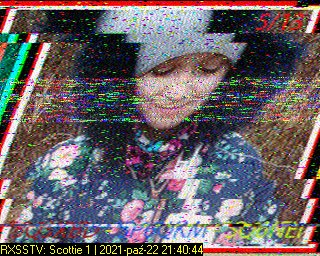 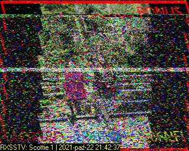 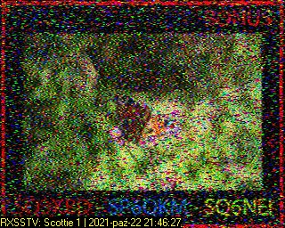 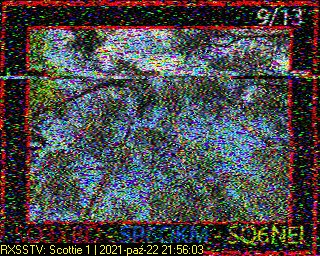 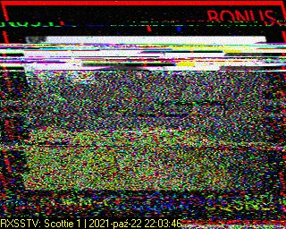 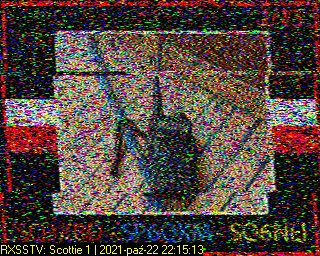 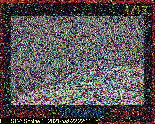 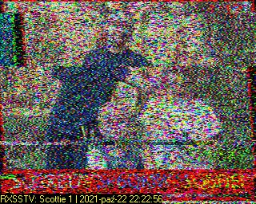 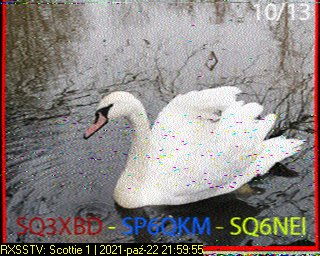 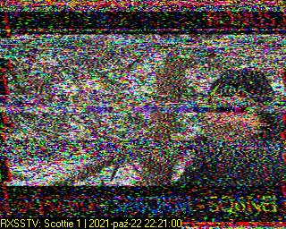 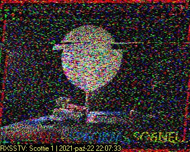 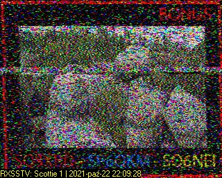 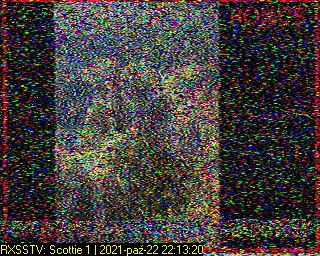 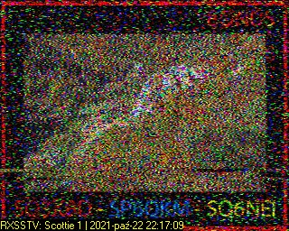 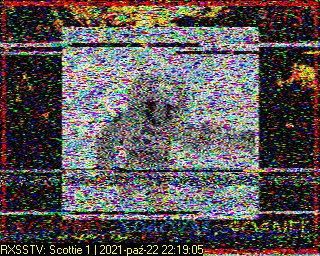 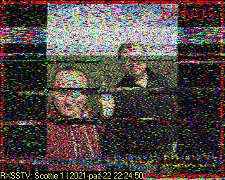 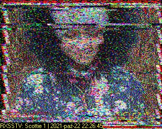 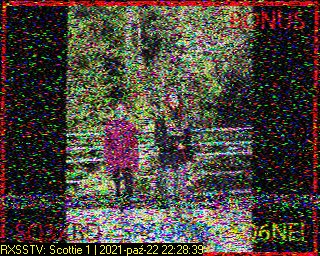 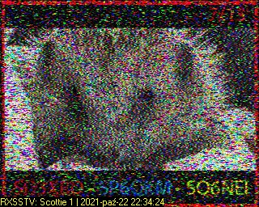